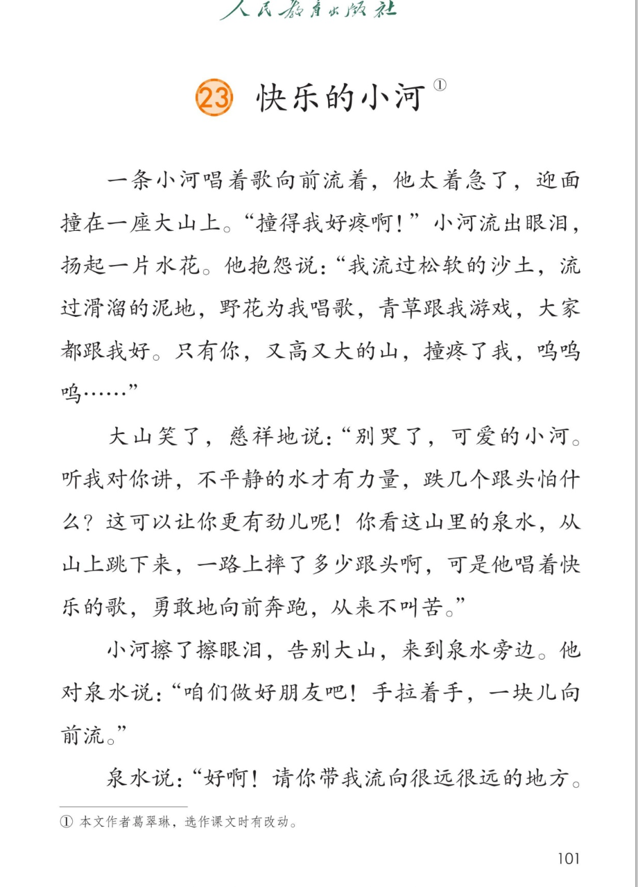
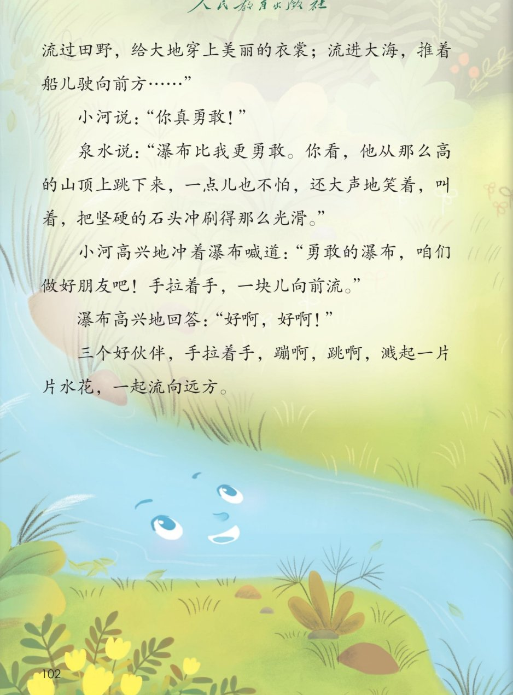
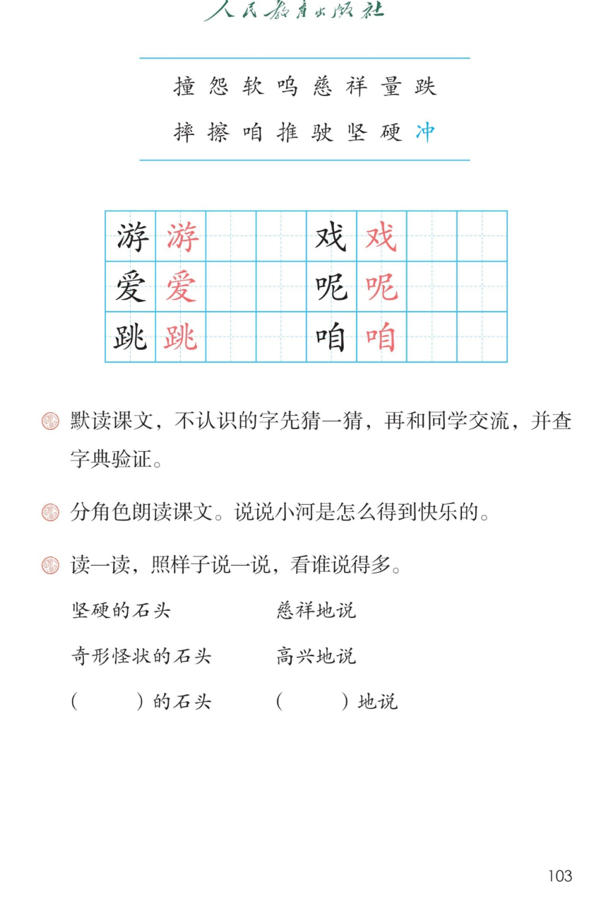

🌊 第 23 课《快乐的小河》· 有声图文带读
统编版语文 · 第八单元·阅读 · 课本 第 101~103 页 · 作者：葛翠琳
课文 9 个自然段
会认字 16
会写字 6
听写词 10
近义词 4 组
深入理解 8 题
本课本领 猜字音·查字典
🎧 五步学（可随时点任意一句、一个字、一个词单独听）： ① 听读课文 ——一句一句读，读到哪一句哪一句发光；开「跟读」后读完一句留时间让你自己读。② 学字词 ——16 个会认字、6 个会写字（含书写提示），点一个读一个。③ 词语·听写·造句 ——先照样子说“的、地”短语，再听写 10 个词、听 4 组近义词辨析。④ 深入理解 ——8 道题（认知 / 理解 / 运用 / 拓展），开放题答案不唯一，先想后看。⑤ 讲故事·分角色 ——说小河怎么得到快乐，再分角色朗读课文。
点段前的 ①②③ 听整段
🔁 跟读模式：关
👁 隐藏注音（自测用）
生字表（第 103 页）没有印拼音，先猜一猜再查字典；页面上的拼音按字典标注，供参考
🎤 朗读要求（老师标准） 不添字、不漏字、不回读 ；默读不出声、不指读 ，不认识的字先猜一猜 ，读完再查字典验证 （本课要练的本领）；句号停得长一点 ；问句（“跌几个跟头怕什么？”）句末往上扬 ；委屈 ，大山慈祥 ，泉水热情 ，瀑布爽快 ；低下来 ；“蹦啊，跳啊”读得欢快 ；最后一句放轻 ，像水流远了。
① 一条小河唱着歌向前流着，他太着急了，迎面撞zhuàng 在一座大山上。 “撞得我好疼啊！” 小河流出眼泪，扬起一片水花。 他抱怨yuàn 说：“我流过松软ruǎn 的沙土，流过滑溜的泥地，野花为我唱歌，青草跟我游yóu 戏xì ，大家都跟我好。只有你，又高又大的山，撞疼了我，呜wū 呜呜……”
② 大山笑了，慈cí 祥xiáng 地说：“别哭了，可爱ài 的小河。听我对你讲，不平静的水才有力量liàng ，跌diē 几个跟头怕什么？这可以让你更有劲儿呢ne ！ 你看这山里的泉水，从山上跳下来，一路上摔shuāi 了多少跟头啊，可是他唱着快乐的歌，勇敢地向前奔跑，从来不叫苦。”
③ 小河擦cā 了擦眼泪，告别大山，来到泉水旁边。 他对泉水说：“咱zán 们做好朋友吧！手拉着手，一块儿向前流。”
④ 泉水说：“好啊！请你带我流向很远很远的地方。流过田野，给大地穿上美丽的衣裳；流进大海，推tuī 着船儿驶shǐ 向前方……”
⑤ 小河说：“你真勇敢！”
⑥ 泉水说：“瀑布比我更勇敢。你看，他从那么高的山顶上跳下来，一点儿也不怕，还大声地笑着，叫着，把坚jiān 硬yìng 的石头冲chōng 刷得那么光滑。”
⑦ 小河高兴地冲chòng 着瀑布喊道：“勇敢的瀑布，咱zán 们做好朋友吧！手拉着手，一块儿向前流。”
⑧ 瀑布高兴地回答：“好啊，好啊！”
⑨ 三个好伙伴，手拉着手，蹦啊，跳tiào 啊，溅起一片片水花，一起流向远方。
🤔 想一想（点我可跳过）
🤔 想一想（点我可跳过）
点一张图，听读整页

第 101 页 · 课题与前四段

第 102 页 · 三个好伙伴

第 103 页 · 生字表与课后题
📖 人教版《语文》二年级上册 · 课本第 101~103 页 · 图片仅供个人学习，版权归人民教育出版社所有
点一个字，听读音、词语和课文里的句子
结构、部首、笔画与书写提示为通用规范，供参考，以教材和老师的指导为准
游
yóu
游戏 · 游泳
12 画 · 左中右（氵）
左中右三部分都要写窄，中间“方”的横要短，右边“子”的弯钩要稳
爱
ài
可爱 · 爱心
10 画 · 上下（爫）
上面爪字头要写扁，中间秃宝盖要宽，下面“友”的撇捺要舒展
跳
tiào
跳下来 · 跳高
13 画 · 左右（足）
左边足字旁要窄、口写小，右边“兆”的竖弯钩要伸出去
戏
xì
游戏 · 唱戏
6 画 · 左右（又）
左边“又”要写小、捺变点，右边“戈”的斜钩要长，最后一点别丢
呢
ne
呢（语气词）
8 画 · 左右（口）
口字旁要小、偏上，右边“尼”的尸要写扁，竖弯钩要稳
咱
zán
咱们 · 咱俩
9 画 · 左右（口）
口字旁要小、偏上，右边“自”要写正，里面两横别挨着
「的」后面跟东西，「地」后面跟动作；看谁说得多
坚硬的石头 “的”后面跟的是东西 ：石头。“坚硬”是说石头很硬、很结实，敲都敲不动。的 + 东西：坚硬的石头
奇形怪状的石头 “奇形怪状”是说石头的样子 稀奇古怪：有的像小动物，有的像小山。前面说得越具体，石头的样子就越清楚
（ ）的石头 轮到你说：先想石头的样子、颜色、手感 ，再说“的石头”。光滑的石头 · 圆圆的石头 · 冰凉的石头 · 一块一块的石头
慈祥地说 “地”后面跟的是动作 ：说。“慈祥地说”就是说话的样子像爷爷奶奶一样温和。地 + 动作：慈祥地说
高兴地说 “高兴地说”：声音往上扬，脸上带着笑。地 + 动作：高兴地说
（ ）地说 轮到你说：先想说话的样子 ，再说“地说”。生气地说 · 小声地说 · 着急地说 · 笑着说
读两遍 → 你在纸上写 → 报答案 → 听示范句
准备听写 · 共 10 个词
○ ○ ○
点下面的「开始听写」，听到一个词就写一个词。
▶ 开始听写
🔁 再读一遍
👁 看答案
点词听读，点句子听示范句，再自己说一句
1 游戏 课文词语
示范句：青草跟我游戏。
✏️ 我也能说：谁和谁 + 一起游戏。比如：下课了，我们在操场上游戏。
2 可爱 课文词语
示范句：别哭了，可爱的小河。
✏️ 我也能说：可爱的 + 什么。比如：我家有一只可爱的小猫。
3 跳下来 课文词语
示范句：你看这山里的泉水，从山上跳下来。
✏️ 我也能说：谁 + 从哪儿 + 跳下来。比如：小猫从桌子上跳下来。
4 咱们 课文词语
示范句：咱们做好朋友吧！
✏️ 我也能说：咱们 + 一起 + 做什么。比如：咱们一起读书吧。
5 呢 会写字
示范句：这可以让你更有劲儿呢！
✏️ 我也能说：我的铅笔呢？ / 他还在写作业呢。
6 着急 课文词语
示范句：他太着急了，迎面撞在一座大山上。
✏️ 我也能说：谁 + 着急得 + 怎么样。比如：他着急得直跺脚。
7 眼泪 课文词语
示范句：小河流出眼泪，扬起一片水花。
✏️ 我也能说：谁 + 流出眼泪。比如：妹妹流出眼泪，又笑了。
8 慈祥 课文词语
示范句：大山笑了，慈祥地说。
✏️ 我也能说：慈祥的 + 谁。比如：奶奶的脸上有慈祥的笑。
9 力量 课文词语
示范句：不平静的水才有力量。
✏️ 我也能说：什么 + 给我力量。比如：好朋友的话给了我力量。
10 坚硬 课文词语
示范句：把坚硬的石头冲刷得那么光滑。
✏️ 我也能说：坚硬的 + 什么。比如：坚硬的石头挡不住流水。
相同点 / 不一样在哪 / 各造一句
快乐 — 高兴
相同：都是心里舒服、想笑。
不一样：快乐 多指一种长久的好心情，也能用在课题、祝福里；高兴 多说自己当时的样子，常跟极了、地说连用。
快乐：快乐的小河，唱着快乐的歌。
慈祥 — 和蔼
相同：都是说对人的样子温和、亲切。
不一样：慈祥 多写老人、长辈的脸和声音；和蔼 多写说话、态度，书面一些。
慈祥：大山笑了，慈祥地说。
勇敢 — 大胆
相同：都是不怕。
不一样：勇敢 是不怕困难、不怕危险，是夸人的好词；大胆 是敢做，有时也指胆子太大、不太小心。
勇敢：勇敢的瀑布，咱们做好朋友吧！
坚硬 — 结实
相同：都是说东西硬、不容易坏。
不一样：坚硬 多写石头、金属这类东西，很硬；结实 多写东西做得牢，也常说身体结实。
坚硬：把坚硬的石头冲刷得那么光滑。
呜呜呜 · 哗哗哗（象声词） 呜呜呜（哭声） 哗哗哗（水声） 轰隆隆（雷声） 叮咚叮咚（泉水声）
擦了擦 · 看了看（动词重叠） 擦了擦眼泪 看了看石头 想了想办法 拍了拍手
手拉着手 · 一块儿（一起） 手拉着手 一块儿向前流 一块儿去上学 一起唱歌
又高又大 · 又……又…… 又高又大 又细又长 又香又甜 又唱又跳
标「答案不唯一」的题，说得有道理都对
认知 小河迎面撞上了什么？撞了以后他怎么样？看解析
🤔 想一想
解析：
第一自然段说：他太着急了，迎面撞在一座大山上。
撞了以后，小河流出眼泪，扬起一片水花。
他还抱怨：只有你，又高又大的山，撞疼了我。
认知 小河说，他流过哪些地方？谁跟他好？看解析
🤔 想一想
解析：
松软的沙土、滑溜的泥地。
野花为我唱歌，青草跟我游戏。
“大家都跟我好”这一句，说出小河原来过得很快乐。
理解 大山为什么说“不平静的水才有力量”？看解析
🤔 想一想
解析：
大山先安慰他：别哭了，可爱的小河。
再讲道理：不平静的水才有力量，跌几个跟头怕什么？
意思是说：遇到困难不是坏事，摔一摔，反而更有劲儿。
理解 听了大山的话，小河为什么不哭了？他接着做了什么？看解析
🤔 想一想
解析：
课文说：小河擦了擦眼泪，告别大山，来到泉水旁边。
他不但不哭了，还主动去交朋友。
这说明大山的话他听进去了，也做到了。
理解 泉水为什么说瀑布比他更勇敢？看解析
🤔 想一想
解析：
泉水说：瀑布比我更勇敢。
瀑布从那么高的山顶上跳下来，一点儿也不怕。
他还把坚硬的石头冲刷得那么光滑——这是天天冲、年年冲才有的力量。
运用 照样子说一说：坚硬的石头 →（ ）的石头；慈祥地说 →（ ）地说。看解析
🤔 想一想
解析：
“的”后面是东西：石头。可以说光滑的石头、圆圆的石头、冰凉的石头。
“地”后面是动作：说。可以说生气地说、小声地说、着急地说。
记住：说东西用“的”，说动作的样子用“地”。
🌈 答案不唯一，说得越多越好（这是课后题第 3 题）
运用 小河是怎么得到快乐的？按顺序说一说。看解析
🤔 想一想
解析：
先：太着急，撞上大山，哭了，还抱怨。
再：大山开导他，他擦了擦眼泪。
接着：和泉水、瀑布做好朋友。最后：手拉着手，一起流向远方。
🌈 答案不唯一，按“先、再、接着、最后”说清顺序就很好（这是课后题第 2 题）
拓展 你遇到过“跌跟头”的时候吗？那时候你会怎么想、怎么做？看解析
🤔 想一想
解析：
先说说自己“跌跟头”的事：跑步摔了、考试没考好、和同学闹别扭。
再想：这件事告诉我什么？下次怎么做更好？
最后：像小河一样，擦擦眼泪，接着往前走。
🌈 答案不唯一，说清“遇到什么、怎么想、怎么做”就很好
点一张卡，听这一步
💬 讲故事支架：先 说小河太着急，迎面撞上大山，哭了、抱怨了 → 再 说大山劝他：不平静的水才有力量，你看泉水一路摔跟头还唱着歌 → 接着 说小河擦干眼泪，和泉水做了好朋友 → 然后 说泉水告诉他，瀑布更勇敢，从那么高的山顶上跳下来也不怕 → 最后 说三个好伙伴手拉着手，蹦啊跳啊，一起流向远方。
点一张卡，听这一部分怎么读
📖 旁白·撞山
一条小河唱着歌向前流着，他太着急了，迎面撞在一座大山上。
💬 第一句轻快 ，第二句慢 下来，让人看见小河哭了
🌊 小河·喊疼
“撞得我好疼啊！”
💬 又疼又急，声音高、短 ，像真的撞疼了
🌊 小河·抱怨
“我流过松软的沙土，流过滑溜的泥地，野花为我唱歌，青草跟我游戏，大家都跟我好。只有你，又高又大的山，撞疼了我，呜呜呜……”
💬 委屈要读出来：“只有你”后面停一下 ，声音低下来，最后“呜呜呜”拖着哭腔
⛰️ 大山·劝他
“别哭了，可爱的小河。听我对你讲，不平静的水才有力量，跌几个跟头怕什么？这可以让你更有劲儿呢！”
💬 读得慢、温和 ，像老人劝孩子；“怕什么”句末往上扬
⛰️ 大山·举例
“你看这山里的泉水，从山上跳下来，一路上摔了多少跟头啊，可是他唱着快乐的歌，勇敢地向前奔跑，从来不叫苦。”
💬 举例子读得稍快、稍亮 ，读出泉水一边摔一边唱歌
📖 旁白·找泉水
小河擦了擦眼泪，告别大山，来到泉水旁边。
💬 “擦了擦”读得轻 ，说明他不哭了
🌊 小河·邀请泉水
“咱们做好朋友吧！手拉着手，一块儿向前流。”
💬 要读得热情、真诚 ，“一块儿”读得亲热一点
💧 泉水·答应
“好啊！请你带我流向很远很远的地方。流过田野，给大地穿上美丽的衣裳；流进大海，推着船儿驶向前方……”
💬 “好啊”读得痛快 ；“很远很远”读慢 ；结尾声音轻下去
🌊 小河·夸勇敢
“你真勇敢！”
💬 短短一句，读出真心佩服 ，声音亮
💧 泉水·夸瀑布
“瀑布比我更勇敢。你看，他从那么高的山顶上跳下来，一点儿也不怕，还大声地笑着，叫着，把坚硬的石头冲刷得那么光滑。”
💬 “更勇敢”读重 ；“从那么高的山顶上跳下来”读慢 ，让人感到高
🌊 小河·邀请瀑布
“勇敢的瀑布，咱们做好朋友吧！手拉着手，一块儿向前流。”
💬 这是喊道 ，要读得响，比邀请泉水更热情
💦 瀑布·答应 + 旁白
“好啊，好啊！”
💬 两个“好啊”读得爽快 ；结尾读得欢快 ，最后一句放轻